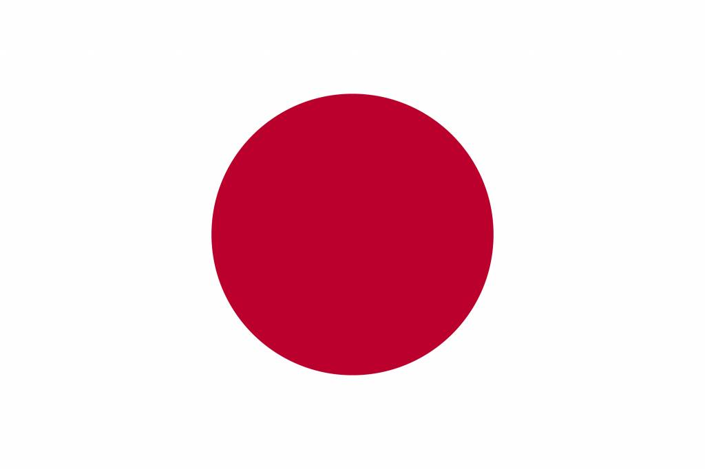

Hallo en welkom op "The Nippon Website". Om te beginnen raden we u aan de tijd te nemen om deze inleiding te lezen en opnieuw te lezen, waardoor u midden in de Japanse taal terechtkomt, door de kenmerken ervan uit te leggen en eerlijk uit te leggen wat echt gemakkelijk is en wat echt wat iets moeilijker kan zijn. Maar bovenal door je alles te laten ontdekken wat zei taaluniversum fascineert.
Een goede kant van de Japanse taal zijn de woorden waaruit ze uit bestaan.
Het Japanse werkwoord kent geen vervoegingen met ik, jij, hij of zij etc. Ik loop is hetzelfde als hij of zij loopt of wij lopen, al deze gevallen kan men vertalen met: arukimasu (lopen). Het werkwoord kent een aantal vormen, waaronder verschillende beleefdheidsvormen en elke vorm heeft weer zijn eigen uitgangen die bijv. horen bij de ontkennende vorm, de verleden tijd en de ontkennende verleden tijd. Elke vorm heeft dus zijn eigen verleden tijd en ontkennende vorm. Elk werkwoord heeft een stam, waar de verschillende uitgangen achter komen. Deze stam wordt verkregen door van de woordenboekvorm (zie hieronder) de laatste -u of -ru te verwijderen.
Het Japans kent wel de persoonlijke voornaamwoorden als ik (watashi), jij (anata), hij (kare), zij (kanojo), wij (watashi tachi) e.d. Deze woorden worden echter niet veel gebruikt. Meestal is het duidelijk over wie men het heeft. Wel wordt bijv. 'watashi' (ik) gebruikt als men de nadruk wil leggen op het feit dat het de persoon zelf betreft, bijv. ter vergelijking met een ander.
De zelfstandige naamwoorden in het Japans kennen geen lidwoorden en geen meervoudsvormen. Het begrip mannelijk, vrouwelijk en onzijdig is onbekend. Het woord 'ie' betekent: het huis, een huis of huizen. Uit de tekst of uit het gebruik van het aantal moet deze informatie gehaald worden.
Het Japans kent geen voltooid deelwoorden. In plaats daarvan gebruikt men de verleden tijd. In plaats van 'Yukiko heeft een liedje gezongen', zegt men 'Yukiko zong een liedje'. Daardoor kan men niet op deze wijze een passieve actie aangeven maar heeft men een aparte passieve vorm. De woordenboekvorm van het werkwoord voor gooien is 'nageru'. De dobbelsteen is geworpen wordt dan: 'sai wa nagerareta'. Hierbij wordt de verleden tijd van de passieve vorm gebruikt, waardoor het duidelijk is dat niet de dobbelsteen zelf wierp. Als iemand op een gekostumeerd bal als dobbelsteen is verkleed en hij/zij gooit iets kan men zeggen: 'sai wa nageta'. De dobbelsteen gooide. Nageta is de verleden tijd van nageru
" IN JAPANESE CULTURE, THERE IS A BELIEF THAT GOD IS EVERYWHERE – IN MOUNTAINS, TREES, ROCKS, EVEN IN OUR SYMPATHY FOR ROBOTS OR HELLO KITTY TOYS." – RYUICHI SAKAMOTO